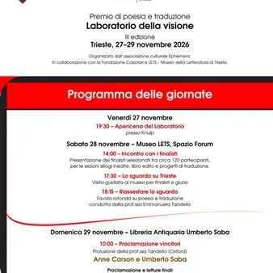

da ven 27 nov a dom 29 nov
III edizione del Premio di poesia e traduzione “Laboratorio della visione”
Dove nasce una poesia? Da quale immagine, incontro o dettaglio prende forma una voce? E che cosa accade quando questa attraversa un’altra lingua? Dal 27 al 29 novembre 2026 torna a Trieste il Laboratorio della visione, tre giornate dedicate alla poesia, alla scrittura e alla…
 Indicazioni
Indicazioni
- Costi e prenotazioni
- Costo non indicato · Prenotazione non indicata
- Programma
- Programma da verificare. Apri la fonte ufficiale per orari e possibili aggiornamenti.
- In caso di maltempo
- Nessuna indicazione specifica pubblicata.
- Note
- Acquisito automaticamente dalla fonte.
L’EVENTO
Descrizione completa
Dove nasce una poesia? Da quale immagine, incontro o dettaglio prende forma una voce? E che cosa accade quando questa attraversa un’altra lingua? Dal 27 al 29 novembre 2026 torna a Trieste il Laboratorio della visione , tre giornate dedicate alla poesia, alla scrittura e alla traduzione, tra incontri, letture e occasioni di confronto. Giunta alla terza edizione, l’iniziativa è organizzata dall’ Associazione culturale Ephèmera , con il supporto della Fondazione Calzolari e in coorganizzazione con LETS – Museo della Letteratura a Trieste . Il Laboratorio è prima di tutto una residenza poetica che riunisce a Trieste autori, autrici e traduttori provenienti da tutta Italia. Selezionati tra circa 120 partecipanti, i finalisti delle tre sezioni del premio – sillogi inedite, libro edito e progetti di traduzione – soggiorneranno in città insieme alla giuria presieduta dalla professoressa Emmanuela Tandello , dell’Università di Oxford. Un’occasione per condividere esperienze e riflessioni sul fare poesia, esplorando i rapporti tra scrittura, traduzione e sguardo, e per incontrare Trieste attraverso i luoghi della sua storia letteraria. Un percorso che si inserisce nel dialogo sulla poesia contemporanea promosso dal Museo LETS attraverso gli appuntamenti di LETSpoetry . Il programma:
Venerdì 27 novembre presso Knulp, via della Madonna del Mare 7A
ore 19:30 - apericena del laboratorio
Sabato 28 novembre | Museo LETS – Spazio Forum, piazza Hortis, 4 Ore 14.00 – Incontro con i finalisti Lo Spazio Forum si apre al pubblico per la presentazione delle opere selezionate nelle tre sezioni del premio. Letture e dialoghi offriranno l’occasione di conoscere gli autori, i loro percorsi di scrittura e i progetti di traduzione. Ore 17.30 – Lo sguardo su Trieste Visita guidata al Museo LETS, condotta dal responsabile del museo Riccardo Cepach, riservata ai finalisti e alla giuria. Ore 18.15 – Riassestare lo sguardo Tavola rotonda dedicata alla poesia e alla traduzione, condotta dalla professoressa Emmanuela Tandello. Un confronto aperto tra autori, traduttori e pubblico sulle questioni emerse durante la giornata. Gli incontri delle 14. 00 e delle 18.15 sono aperti al pubblico fino a esaurimento dei posti disponibili. Domenica 29 novembre | Libreria Antiquaria Umberto Saba, Via San Nicolò 30 Ore 10.00 – Proclamazione dei vincitori e letture finali La giornata conclusiva si aprirà con la prolusione “ Anne Carson e Umberto Saba” della professoressa Emmanuela Tandello , presidente della giuria. L’incontro proporrà un originale accostamento tra il poeta triestino e la scrittrice canadese, Premio Nobel per la letteratura 2026 , mettendo in dialogo due voci e due esperienze poetiche lontane nel tempo, ma capaci di offrire prospettive inattese sulla scrittura. Seguiranno la proclamazione dei vincitori delle tre sezioni del premio e le letture finali. Ingresso aperto al pubblico fino a esaurimento dei posti disponibili.
IL PROGRAMMA
Programma e orari
Appuntamenti raccolti dalle fonti elencate. Dove manca un orario, non è ancora disponibile in questa scheda.
Programma pubblicato
- ore 19:30 -
- Ore 14.00 – Incontro con i finalisti
- Ore 18.15 – Riassestare lo sguardo
- Ore 10.00 – Proclamazione dei vincitori e letture finali
INFORMAZIONI UTILI
Prima di partire
- Controllare la fonte prima di partire.
ORGANIZZAZIONE